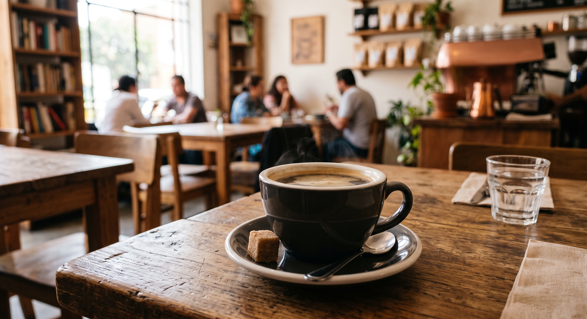
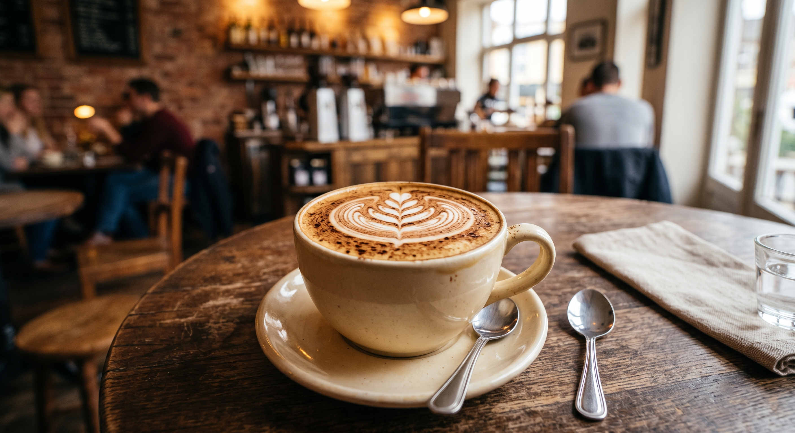

Especial del Día
Especial del Día  Lo Más Pedido
Lo Más Pedido

americano
Expreso intenso y agua caliente que resaltan las notas más puras del grano. Ideal para empezar el día con energía.

cappuccino
Expreso intenso y leche vaporizada, coronado con una generosa capa de espuma. Rico y suave en cada sorbo.

mocha
Expreso, leche vaporizada y chocolate suave, coronado con espuma. La opción perfecta para los amantes del sabor dulce.
americano
También disponible en tamaño grande, para quienes buscan más café sin perder su sabor característico.
cappuccino
Nuestra versión con canela y un toque de cacao espolvoreado, perfecta para las tardes frías.
mocha
Edición con crema batida y jarabe de chocolate extra, para un capricho dulce en cualquier momento.
Menú del Día

Descubre las delicias que nuestro chef ha preparado para ti hoy. Nuestro "Menú del Día" está diseñado para ofrecerte una comida reconfortante y deliciosa, elaborada siempre con ingredientes frescos y de la más alta calidad. Déjate sorprender por nuestra selección de hoy:
- Sopa del día: Tradicional sopa cremosa de poro y papa.
- Opción ligera: Panini de atún tostado a la perfección.
- Pasta clásica: Espagueti con tomate, berenjena, tomates cherry, albahaca y mozzarella fresca.
- Del mar: Tilapia con costra de papa, servida en salsa de vino blanco y albahaca.
- Especialidad: Risotto con salchicha italiana y chícharos en una exquisita salsa de azafrán.
- Acompañamiento: Incluye tu elección de bebida de la casa o café americano.